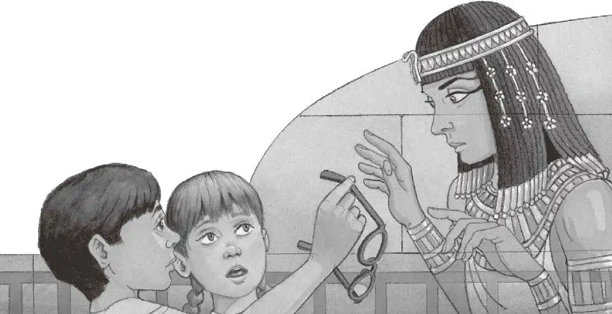

“是幽灵。”安妮轻声说。
杰克吓坏了，惊恐地瞪大了眼睛。
这时，幽灵开口说话了，她的嗓音空洞，还带着回声。
“我是哈特比，”她幽幽地说道，“尼罗河的女王。你们是来帮助我的吗？”
杰克吓得说不出话来。
“是的。”安妮说。
“我一直在等有人来帮我，”幽灵女王说，“等了上千年。”
杰克的心跳得越来越快，他觉得自己随时都会晕倒。
“必须得有人找到我的那本亡灵书，”她说，“有了它，我才能进入另一个世界。”
“你为什么需要亡灵书呢？”安妮问道，她好像一点儿也不害怕。
“亡灵书会告诉我穿越冥界所需要的魔法咒语。”幽灵女王回答。
“冥界？”安妮问。
“对，在我进入另一个世界之前，我必须穿越冥界的种种恐怖事物。”
“什么样的恐怖事物呢？”安妮又问。
“毒蛇、火海、巨兽、恶魔。”幽灵女王回答。
“哦。”安妮往杰克身边凑了凑。
“为了不让盗墓人发现，我的哥哥把亡灵书藏起来了。”幽灵女王说，“然后，他在墙上刻下了秘密信息，希望我通过它找到亡灵书。”说完她指了指墙壁。
杰克仍然惊魂未定，一动不动地站在那儿。
“信息在哪儿呢？”安妮问幽灵女王，“是这儿吗？”她眯起眼睛往墙上看，“这些小小的图形是什么意思？”
幽灵女王的脸上露出了忧伤的微笑，说：“唉，我哥哥忘了我有个奇怪的毛病，我看不清近处的东西。于是上千年来，我一直没办法读懂那些秘密信息。”
“这不是什么奇怪的毛病，”安妮说，“我哥哥也跟你一样，所以他戴着眼镜呢。”
幽灵女王惊讶地盯着杰克。
“杰克，把你的眼镜借给她。”安妮说。
杰克从鼻子上摘下眼镜，递给了幽灵女王。
幽灵女王把身体往后一缩，说：“我戴不了你的眼镜，杰克。你也看到了，我是由空气构成的。”
“对哦，我忘记了。”安妮说。
“不过，你们可以给我描述一下这面墙上的象形文字。”幽灵女王说。
“象——什么字？”安妮不解地问。
“象形文字！”杰克总算能说出话来了，“它是古埃及的书写文字，就像图形一样。”
幽灵女王笑眯眯地看着杰克，说：“谢谢你！”

杰克朝她笑了笑，然后戴上眼镜，凑到墙壁前仔细观察墙上的字。
“哇，天哪！”他喃喃地感叹道。